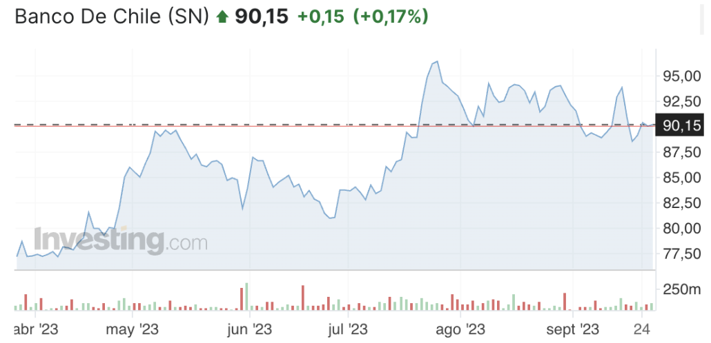

Plantilla Proyecto
Descripción Activo y Contexto (Hito 1)
Fecha de entrega: Jueves 28 de Septiembre 23:59.
Definición
En el presente informe se enfocará en el sector de la banca, específicamente en el Banco de Chile. La banca es el conjunto de instituciones financieras que operan en Chile, ofreciendo servicios y productos de carácter financiero a personas naturales, organizaciones y empresas. Dentro de estos productos y servicios se encuentran, tarjetas de créditos, créditos de consumo o hipotecarios, cuentas corrientes y vistas. La entidad encargada de velar por el correcto funcionamiento, desarrollo y estabilidad del mercado financiero a través de regulaciones es la comisión para mercados financieros (CMF).
En Chile existen 17 bancos que son fiscalizados por la CMF los cuales se dividen en tres subgrupos. El primer subgrupo y que solo contempla un banco, es el estatal, que en este caso solo se encuentra el Banco Estado. Otro subgrupo son las sucursales de bancos extranjeros, donde encontramos a JP Morgan Bank, China Construction Bank y Bank of China. El último subgrupo que cuenta con los otros 13 bancos, son aquellos establecidos en Chile. Algunos de ellos son: Banco de Chile, Scotiabank Chile, Banco BICE, Banco Santander, entre otros.
Establecer la relevancia o potencial interés específico del activo que justifique el porque realizar la investigacion a este activo y no a otros. Argumentar haciendo referencia a datos o noticias actuales que motiven el estudio de este activo.
Como se comentó al inicio, este trabajo se centrará principalmente en el Banco de Chile. Este nace de una fusión entre tres bancos, el Banco de Valparaíso, Banco Agrícola y el Banco Nacional de Chile en 1893. Es una sociedad anónima abierta, lo que significa que cotiza en bolsa y está sujeta a regulaciones específicas para este tipo de entidades.
Es importante mencionar cómo es que un banco gana dinero y puede llevar su negocio a cabo sin quebrar. Si bien los bancos tienden a tener un leverage alto ya que su nivel de apalancamiento es alto, la estrategia utilizada ayuda a que estos puedan generar dinero a través de sus clientes casi sin pagarles. La estrategia utilizada es principalmente utilizar el saldo de las cuentas vistas para invertir en activos. Es decir, la plata guardada de sus clientes la usan para realizar inversiones a costo cero. El principal riesgo que se podría producir y hacer que un banco quiebre es la corrida bancaria, tal como le pasó al Silicon Valley Bank.
Uno de los papers que me motivó a trabajar en esta industria es llamado “Institutional development and foreign banks in Chile”, escrito por Brian Du, Alejandro Serrano y Andre Vianna. Si bien su enfoque principal es ver cómo afectan los bancos extranjeros en la industrial, lo que me llamó la atención fue cómo describen a Chile. Lo describen como un mercado emergente pero con instituciones sólidas. También comentan que el sector se diferencia de los otros países de latam ya que tienen una alta tasa de inversionistas institucionales lo que implica que la fuente de ingresos es más estable y permite generar una gran proporción de préstamos a deposito. Según lo leído, es interesante informarse qué opinan desde fuera sobre la banca chilena y esto genera un mayor interés para trabajar en este sector que es fuertemente estable y regulado.
Motivación
Se decidió trabajar en este sector porque es uno de los sistemas más grandes e importantes del país. Además, después de lo que sucedió a principios de este año con el Silicon Valley Bank, personalmente comprendí el alto grado de regulación que tienen los bancos en Chile (debido a la crisis en la década de los 80) y lo confiables que son en si se comparan con los demás países, gracias a su regulación. Por ejemplo lo ocurrido en Estados Unidos con el SVB es algo que es muy difícil que pueda ocurrir acá. A nivel personal, esto se alinea con mi meta a corto plazo de trabajar en el sector bancario una vez concluidos mis estudios universitarios, por lo que creo que este trabajo puede ayudarme a aprender y entender más sobre el sector de la banca en Chile
Contexto
El activo analizado es el banco de chile, la forma más fácil, común y tradicional para poder invertir en él es mediante la compra de acciones.. Al momento de invertir es necesario tener en cuenta el retorno actual e histórico, nivel de apalancamiento, riesgos, como gana dinero el banco y variables que pueden afectar el retorno de la inversión. Estas variables pueden ser de tipo macroeconómico y/o microeconómico, más adelante en este inciso se hablara de algunos ejemplos de estos factores que afectan.
Lo primero a comentar es el valor cuota de la acción y su cambio con el tiempo. A continuación se observa este y el cambio que ha tenido el valor cuota durante los últimos 6 meses.

Se observa que a día de hoy el valor de la cuota por acción es de 90,15 pesos chilenos y que la rentabilidad en estos 6 meses es positiva pero tiende a bajar en los últimos meses, la cual se ha vuelto más volátil. Durante estos últimos 6 meses el valor más bajo fue de un poco menos de 77,50 pesos chilenos y el más alto de un poco más de 95 pesos chilenos por acción.
Otro factor importante para el precio de la cuota es la calificación de la solvencia del banco. El día 1 de marzo de 2023, Feller Rate clasificó a Banco de Chile en “AAA”. Esto indica que Feller considera al banco de chile como estable y por ende tiene un impacto positivo en el activo. Está clasificado según Feller se fundamenta ya que el banco opera con un fuerte respaldo patrimonial, y tiene una gran capacidad de generar liquidez en caso de una corrida bancaria.
Otro tema a tener en cuenta principalmente en los bancos, son a los riesgos que están expuestos. Los principales riesgos son, riesgos de default, cambiario (tipo de cambio), de descalce y de mercado. De todas formas el principal riesgo de un banco es la corrida bancaria y esta se fundamenta principalmente en la baja confianza que un banco genera. En el caso del Banco de Chile, la confianza con los clientes es elevada gracias a varios factores. Primero como se comentó antes, la gran regulación que tienen los bancos en Chile, segundo la alta clasificación que tiene el banco y tercero la buena imagen que tiene el banco gracias a su participación en eventos como la Teletón. Si bien puede parecer un evento poco relevante a nivel financiero, a nivel de imagen ayuda a generar confianza y aceptación por parte de los clientes. Gracias a estos factores, el riesgo de corrida bancaria es muy bajo.
Por otro lado, existen variables económicas que afectan directamente a los bancos. Como es de público conocimiento, los créditos que entregan a empresas y personas son una de sus grandes fuentes de financiamiento. Una variable macroeconómica que afecta directamente este negocio, principalmente en la tasa de interés que cobran por crédito, es la tasa de política monetaria. Es una tasa diaria que afecta a todo el país y su valor es decidido por el banco central de Chile. A continuación se observa la tasa de política monetaria a traves de los últimos 10 años:
Otra variable que puede afectar a los créditos es el IPC, a medida que este valor es más alto las cosas cuestan más. Por lo tanto puede generar un doble efecto, los chilenos se endeudan más para pagar más mediante créditos, o que baje la cantidad de créditos solicitados por el alto valor de estos. Generalmente suele ocurrir primero. A continuación se observa un gráfico con el IPC de Chile durante los últimos 10 años:
Análisis de Largo Plazo
Todo banco debe tener un estado resultado impecable mostrando sus activos, pasivos y patrimonio. Banco de Chile no se queda atrás, y con esta información la cual es pública podemos entrar en detalle donde invierte y cómo se financia. El documento utilizado que contiene esta información se llama “Informe sobre los Estados Financieros Consolidados”.
A continuación, una imagen con los activos del banco:
Se observa que el total de activos es de cerca de 54.000.000 millones de pesos chilenos, donde la gran parte es a través de créditos comerciales, consumo y vivienda. El porcentaje de ellos con respecto al total de activos es de 35,2%, 8,85% y 21,76% respectivamente. Otro activo de alto valor son los instrumentos financieros de deuda que contemplan un 7,86% de los activos totales. Otro dato interesante es las inversiones en sociedades que tienen, la cual es un número no mayor. Las principales sociedades en que invierten son: Transbank, Redbanc, Servipag, entre otras. Es importante mencionar que la cantidad de acciones en circulación es de 101.017.081.114.
Por el contrario, también se encuentran los pasivos y patrimonio de la empresa:
Se observa que los pasivos que más alto porcentaje tienen son depósitos y otras obligaciones a la vista, depósitos y otras captaciones a plazo e instrumentos financieros de capital regulatorio emitidos. Su porcentaje con respecto al total de pasivos y patrimonio es de 23,5%, 27,88% y 17,55% respectivamente.
Con respecto a las emisiones de deuda del Banco, no se encontró información alguna de aquello.
Relación con activos derivados
Si bien no se encuentra mayor información sobre activos derivados que dependan del precio de la acción del Banco de Chile, este como ente utiliza derivados financieros con el fin de reducir riesgo. El más común es el riesgo de tipo de cambio, se les da principalmente con el dólar. Para esto el banco llega a un acuerdo con el banco central u otra entidad con el fin de pactar un precio para el valor de venta y compra del dólar. Esta opción no es una obligación pero si le da la posibilidad al banco de poder ejecutarla y así disminuir el riesgo tanto de tipo de cambio como el riesgo por tasa de interés. Otro caso que se da, son los forwards. Donde el banco pacta un precio de compra o venta en una fecha determinada para transar dólares.
Reporte grupal
Los tres activos que se utilizaron para poder crear el portafolio y maximizar el retorno de la cartera son, Banco de Chile, Enel y Parque Arauco. Para obtener este portafolio se utilizaron los precios históricos del último año de cada uno de estas empresas y fueron obtenidos desde Yahoo Finance. La rentabilidad mensual promedio del último año para cada uno de los activos fue:
| Activo | Retorno Promedio Mensual |
| Banco de Chile | 1,72% |
| Enel | 4,59% |
| Parque Arauco | 4,28% |
Para plantear el problema de optimización se calculó la matriz de varianza-covarianza de los retornos mensuales de estos activos y se utilizó los BCP de 10 años como tasa libre de riesgo. Se resolvió el problema en Solver de excel y la cartera que entregaba el mayor ratio de Sharpe es:
| CHILE | ENEL | PARAUCO | Riesgo | Retorno | Rf | Sharpe Ratio |
| 23,18% | 26,90% | 49,92% | 6,64% | 3,77% | 0,48% | 49,51% |
Por lo tanto, utilizando esos pesos se maximiza el ratio de sharpe y es la cartera o portafolio óptimo.
Hito 2:
Modelo Black Scholes
El modelo Black-Scholes, desarrollado en la década de 1970 por Fischer Black y Myron Scholes, es una herramienta para la valoración de opciones financieras. Proporciona una fórmula matemática para calcular el precio teórico de opciones de compra y venta en función de factores clave como el precio del activo subyacente, el precio de ejercicio, el tiempo hasta la expiración, la tasa de interés libre de riesgo y la volatilidad.
Es posible relacionar algunas derivaciones observadas entre los precios de mercado y del modelo B-S con la predicción de otros modelos. De ese modo se puede conciliar afirmaciones contradictorias en la literatura empírica sobre la relación entre los precios de mercado y los precios del modelo B-S. (Macbeth-Merville, 1979).
Para este trabajo se solicitó utilizar este modelo con el fin de poder determinar el precio de call para el activo estudiado. Por lo tanto, a continuación se define el modelo:
ùê∂(ùëÜ, ùë°) = ùëÜŒ¶(ùëë1) ‚àí ùêæ exp(‚àíùëüùë°) Œ¶(ùëë2)
donde d1 y d2 se obtienen a partir de:
En cualquier periodo, C es el valor de mercado de la opción call; S es el precio de la acción estudiada; K es precio de ejercicios; t es tiempo de expiración en años, R es la tasa libre de riesgo y 2 es la variación de los retornos de la acción estudiada.
A partir de los retornos de la acción de Banco de Chile, se pudo determinar S = 91.24 CLP y su 2= 0.6%. Además, para la tasa libre de riesgo se utilizó la tasa del banco central y gobierno a 10 años que da un valor de 5% mensual para un periodo de 1 año y un precio de ejercicio igual a 95 CLP.
Utilizando el código generado en colab (Colab_DiegoE) el resultado del precio de la opción de compra en un periodo de 1 año es aproximadamente de 21.85 CLP. Además se realizó un gráfico para analizar la variación del precio de opción de compra los valores de strike de 80 hasta 150, a continuación el resultado:
Observamos que cuando el precio de ejercicio aumenta en el modelo de Black-Scholes, la opción de compra se vuelve menos atractiva. Esto se debe a que con un precio de ejercicio más alto, el activo subyacente debe moverse más lejos en el mercado antes de que la opción de compra sea rentable. Como resultado, el precio de la opción de compra disminuye.
Modelo de Montecarlo
El modelo supone que es una opción europea y comienza con la generación "z" a través de "n" simulaciones. Para esto fija una semilla para crear números aleatorios con una distribución normal. Uno de esos valores es utilizado para calcular el precio del activo subyacente al vencimiento. Este cálculo se hace a través de la siguiente manera:
Donde, ST es el precio del activo subyacente; S es el precio actual del activo subyacente, T el tiempo de expiración en años, r la tasa libre de riesgo, sigma la volatilidad del activo subyacente y "z" la variable aleatoria con distribución normal obtenida a través de montecarlo.
Posteriormente, se calcula el valor del payoff usando:
payoff = max(ST-K, 0)
Donde, ST es el calculado anteriormente y K son los strikes.
Finalmente para calcular el valor de la opción se utiliza la siguiente fórmula:
Cabe destacar que este modelo fue obtenido del documento llamado "Monte Carlo Methods in Financial Engineering", hecho por (Glassermann, 2003).
Para este caso, se utilizan los mismos valores de S, r, T, y K utilizados en el modelo Black-Scholes. Se observa para una cantidad de 100,000 simulaciones el colab (Colab_DiegoE) que el valor el valor estimado de la opción de compra europea es: 20.83 CLP.
Se realizó un gráfico para observar el cambio del valor estimado de la opción de compra europea ante el cambio de los Strikes, que toman valores desde 75 a 150. A continuación se presenta el gráfico:
Análisis de contraste de ambos modelos
La principal diferencia entre ambos modelos es que Monte Carlo realiza una cantidad alta de simulaciones para calcular los precios de las opciones. Usan metodologías distintas pero que son observadas en los incisos anteriores.
Para observar sus resultados, se realizó un código para mostrar el cambio de precios ante cambios en el valor del strike. El gráfico se observa a continuación:

Se observa que si bien son modelos distintos, el resultado es bastante similar entre ambos. Se comenta que el modelo monte carlo es bastante preciso dado su alta cantidad de simulaciones. Por lo que esto nos indica que para este caso, el modelo Black Scholes también es un modelo preciso por la alta similitud entre ambos modelos.
Reporte Grupal: Caso Administración
ADMINISTRACIÓN DE EFECTIVO EN RICHMOND CORPORATION
Richmond Corporation fue fundada hace 20 años por su presidente, Daniel Richmond. En sus comienzos, la compañía realizaba ventas por correo, pero en los últimos años ha crecido con rapidez, en buena medida debido a su sitio web. En virtud de la gran dispersión geográfica de los clientes, en la actualidad, la firma emplea un sistema de cajas de correo con centros de cobranza en San Francisco, Saint Louis, Atlanta y Boston.
Steve Dennis, tesorero de la compañía, ha examinado las políticas vigentes de cobranza de efectivo.En promedio, cada centro de cajas de correo maneja 235 000 dólares de pagos cada día. La política actual de la empresa es invertir estos pagos en títulos negociables a corto plazo en los bancos que manejan los centros de cobranza. Cada dos semanas se vacían las cuentas de inversión y los saldos se transfieren por medios electrónicos a las oficinas centrales de Richmond, en Dallas, para pagar la nómina de la empresa. Las cuentas de inversión pagan cada una .068% al día y las transferencias electrónicas cuestan .20% del monto transferido.
Steve ha entablado conversaciones con el Third National Bank, situado en las afueras de Dallas, para estudiar la posibilidad de establecer un sistema de banco concentrador para la empresa. Third National aceptará los pagos diarios de los centros de cajas de correo por medio de transferencias de cámara de compensación automatizada (ACH, del inglés automated clearinghouse) en lugar de transferencias electrónicas. Los fondos que transfiera ACH no estarán disponibles para uso durante un día. Una vez compensados, los fondos se depositarán en una cuenta de inversión a corto plazo, que ofrece un rendimiento de .075% al día. Cada transferencia por ACH costará 200 dólares. Daniel ha pedido a Steve que determine cuál es el mejor sistema de administración de efectivo para la compañía.
¿Cuál es el flujo de efectivo neto total de Richmond Corporation que genera el actual sistema de cajas de correo y con el que se paga la nómina?
Para resolver este problema, se debe tener en cuenta la siguiente información.
Centros 4 unidades Pagos 185.000 USD Tranferencia de saldos 14 días Cuentas de inversión 0,07 % Costo tranferecnias electrónicas 0,20 % Rendimiento (en cuenta de inversión) 0,075 % Costo tranferencia por ACH 200 USD
Para obtener el flujo de efectivo neto total, se realiza la siguiente fórmula.
Para calcular el valor futuro se resuelve la siguiente fórmula.
Finalmente reemplazando, se obtiene que el flujo de efectivo que se genera con el flujo de caja descrito en el enunciado y con el que se paga finalmente la nómina es de $10.385.104 USD.
- De acuerdo con los términos propuestos por Third National Bank, ¿la compañía debe adoptar el sistema de banco concentrador?
El banco aceptará las transferencias ACH de los cuatro bancos diferentes, por lo que la compañía incurre en una tarifa de transferencia de cada centro de recolección. Es por eso que ahora se deberá descontar el valor de la transferencia ACH a los pagos de 185mil USD de cada día. Además, todo será dividido por (1+ tasa de rendimiento).
El valor futuro de los depósitos ahora será:
Vf = [- Centros*Valor futuro] / [1 + Tasa de rendimiento]
Reemplazando los valores, se obtiene que finalmente el valor de ACH será de $10.391.608 USD. Como se puede observar, este valor es mayor al obtenido en la pregunta anterior, por lo tanto la compañía debería adoptar el sistema del banco concentrador.
- ¿Qué costo de las transferencias por ACH haría que resultara indiferente para la empresa elegir cualquiera de los dos sistemas?
Para este caso, debemos depsejar el Valor futuro de la siguiente ecuación.
10.385.104 = (4centros*ValorFuturo) / (1+0,075%)
Como se mostró en la pregunta anterior, al valor futuro se le descontó las transferencias de ACH. En este caso, la variable a encontrar X es este valor por transferencia. La ecuación quedaría como en la siguiente imagen.
Bibliografía:
Banco Central de Chile. 2023. Gráfico TPM. Disponible en: https://si3.bcentral.cl/Bdemovil/BDE/Series/MOV_SC_TI1 (Accedido en: Septiembre 27, 2023)
Banco de Chile (2023). Acerca de nosotros. Disponible en: https://portales.bancochile.cl/nuestrobanco/es/nb/acerca-de-nosotros (Accedido en: Septiembre 27, 2023)
Banco de Chile. 2023. Informe sobre los estados financieros intermedios consolidados. Disponible en: https://portales.bancochile.cl/nuestrobanco/es/investor-relations/informacion-financiera/reportes-financieros
Bolsa de Santiago. 2023. Resumen del Instrumento. Disponible en: https://www.bolsadesantiago.com/resumen_instrumento/CHILE
CMF. 2023.Información de Fiscalizados y otras instituciones registradas. Disponible en: https://www.cmfchile.cl/portal/principal/613/w3-propertyvalue-29006.html (Accedido en: Septiembre 27, 2023)
Dua, Brian. Serrano, Alejandro. Vianna, André. 2018. Institutional development and foreign banks in Chile. Disponible en: https://www.sciencedirect.com/science/article/abs/pii/S1057521917301266?via%3Dihub
Glassermann, P. 2003. Monte Carlo Methods in Financial Engineering. Disponible en: https://www.mi.uni-koeln.de/wp-znikolic/wp-content/uploads/2017/05/1_Monte_Carlo_28042017.pdf
Investing. 2023. Acciones Banco de Chile. Disponible en: https://es.investing.com/equities/banco-de-chile-(sn) (Accedido en: Septiembre 27, 2023)
Ministerio de Hacienda. 2023. Disponible en:: https://www.hacienda.cl/indices/inflacion-12-meses (Accedido en: Septiembre 27, 2023)
Macbeth, Merville. 1979. An Empirical Examination of the Black-Scholes Call Option Pricing Model. Disponible en: The Journal of Finance, Vol. 34, No. 5 (Dec., 1979), pp. 1173-1186 (14 pages)
Soledad Rivera, María. (2023). Feller Rate ratifica en “AAA” la solvencia de Banco de Chile. Perspectivas “Estables”. Disponible en: https://www.feller-rate.com/clasificacion-cp/14392/15887/banco-de-chile#:~:text=Feller%20Rate%20ratifica%20en%20%E2%80%9CAAA,Perspectivas%20%E2%80%9CEstables%E2%80%9D.&text=Feller%20Rate%20ratific%C3%B3%20la%20clasificaci%C3%B3n,la%20clasificaci%C3%B3n%20son%20%E2%80%9CEstables%E2%80%9D. (Accedido en: Septiembre 27, 2023)
Yahoo Finance. 2023. Banco de Chile (CHILE.SN). Disponible en: https://finance.yahoo.com/quote/CHILE.SN?p=CHILE.SN&.tsrc=fin-srch (Accedido en: Septiembre 27, 2023)
Villamil, Jaime. 2006. MODELOS DE VALORACIÓN DE OPCIONES EUROPEAS EN TIEMPO CONTINUO. Cuad. Econ. vol.25 no.44 Bogotá June 2006. Disponible en: http://www.scielo.org.co/scielo.php?pid=S0121-47722006000100008&script=sci_arttext